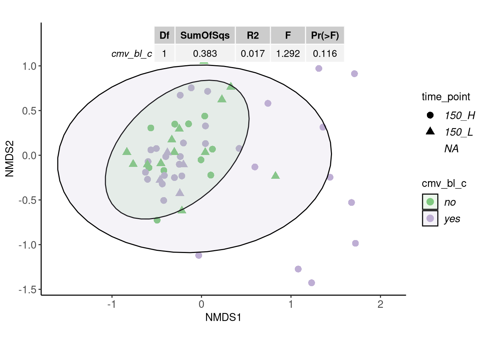

CMV vs Gene Richness
Carlos Blázquez Bondia
2022-11-30
Last updated: 2023-04-18
Checks: 7 0
Knit directory: advanz4/
This reproducible R Markdown analysis was created with workflowr (version 1.7.0). The Checks tab describes the reproducibility checks that were applied when the results were created. The Past versions tab lists the development history.
Great! Since the R Markdown file has been committed to the Git repository, you know the exact version of the code that produced these results.
Great job! The global environment was empty. Objects defined in the global environment can affect the analysis in your R Markdown file in unknown ways. For reproduciblity it’s best to always run the code in an empty environment.
The command set.seed(20211203) was run prior to running the code in the R Markdown file. Setting a seed ensures that any results that rely on randomness, e.g. subsampling or permutations, are reproducible.
Great job! Recording the operating system, R version, and package versions is critical for reproducibility.
Nice! There were no cached chunks for this analysis, so you can be confident that you successfully produced the results during this run.
Great job! Using relative paths to the files within your workflowr project makes it easier to run your code on other machines.
Great! You are using Git for version control. Tracking code development and connecting the code version to the results is critical for reproducibility.
The results in this page were generated with repository version 0aef819. See the Past versions tab to see a history of the changes made to the R Markdown and HTML files.
Note that you need to be careful to ensure that all relevant files for the analysis have been committed to Git prior to generating the results (you can use wflow_publish or wflow_git_commit). workflowr only checks the R Markdown file, but you know if there are other scripts or data files that it depends on. Below is the status of the Git repository when the results were generated:
Ignored files:
Ignored: .RData
Ignored: .Rhistory
Ignored: .Rproj.user/
Ignored: analysis/.Rhistory
Ignored: analysis/420_Taxonomy_DA_cache/
Ignored: analysis/505_Adenovirus_Analysis_cache/
Ignored: analysis/510_Function_DA_cache/
Ignored: data/mre.rds
Unstaged changes:
Modified: analysis/250_BL_stratification.Rmd
Deleted: analysis/250_BL_stratification.html
Modified: analysis/315_GeneRichness_vs_CD4.Rmd
Modified: analysis/317_GeneRichness_vs_Inflammation.Rmd
Modified: analysis/335_BLMicrobiome_vs_ImmuneResponse.Rmd
Modified: analysis/420_Taxonomy_DA.Rmd
Modified: analysis/_site.yml
Modified: code/group_comparisons.R
Modified: output/figures/GR_group_boxplots.svg
Modified: output/figures/LMMs_GR.svg
Modified: output/figures/LMMs_GRrel.svg
Modified: output/figures/inflammation.svg
Modified: output/figures/recovery_grid.svg
Modified: output/figures/richness_reconstitution.svg
Modified: output/figures/richness_reconstitution_relative.svg
Modified: output/general_boxplot_stats
Modified: output/mre_data/CatalogMapping/IGC/lmm/lmm_time_point_by_group.pdf
Modified: output/mre_data/SpeciesQuantification/Metaphlan3/NMDS/Species/bray_stressplot.pdf
Modified: output/mre_data/SpeciesQuantification/Metaphlan3/NMDS/Species/categorical_nmds_CD4after_48.pdf
Modified: output/mre_data/SpeciesQuantification/Metaphlan3/NMDS/Species/categorical_nmds_CD4after_96.pdf
Modified: output/mre_data/SpeciesQuantification/Metaphlan3/NMDS/Species/categorical_nmds_CD4diff_48.pdf
Modified: output/mre_data/SpeciesQuantification/Metaphlan3/NMDS/Species/categorical_nmds_CD4diff_96.pdf
Modified: output/mre_data/SpeciesQuantification/Metaphlan3/NMDS/Species/categorical_nmds_CD8after_48.pdf
Modified: output/mre_data/SpeciesQuantification/Metaphlan3/NMDS/Species/categorical_nmds_CD8after_96.pdf
Modified: output/mre_data/SpeciesQuantification/Metaphlan3/NMDS/Species/categorical_nmds_CD8diff_48.pdf
Modified: output/mre_data/SpeciesQuantification/Metaphlan3/NMDS/Species/categorical_nmds_CD8diff_96.pdf
Modified: output/mre_data/SpeciesQuantification/Metaphlan3/NMDS/Species/categorical_nmds_center.pdf
Modified: output/mre_data/SpeciesQuantification/Metaphlan3/NMDS/Species/categorical_nmds_cluster.pdf
Modified: output/mre_data/SpeciesQuantification/Metaphlan3/NMDS/Species/categorical_nmds_ethnic_group.pdf
Modified: output/mre_data/SpeciesQuantification/Metaphlan3/NMDS/Species/categorical_nmds_gender.pdf
Modified: output/mre_data/SpeciesQuantification/Metaphlan3/NMDS/Species/categorical_nmds_group.pdf
Modified: output/mre_data/SpeciesQuantification/Metaphlan3/NMDS/Species/categorical_nmds_risk_group.pdf
Modified: output/mre_data/SpeciesQuantification/Metaphlan3/NMDS/Species/cluster_categorical_nmds_CD4after_48.pdf
Modified: output/mre_data/SpeciesQuantification/Metaphlan3/NMDS/Species/cluster_categorical_nmds_CD4after_96.pdf
Modified: output/mre_data/SpeciesQuantification/Metaphlan3/NMDS/Species/cluster_categorical_nmds_CD4diff_48.pdf
Modified: output/mre_data/SpeciesQuantification/Metaphlan3/NMDS/Species/cluster_categorical_nmds_CD4diff_96.pdf
Modified: output/mre_data/SpeciesQuantification/Metaphlan3/NMDS/Species/cluster_categorical_nmds_CD8after_48.pdf
Modified: output/mre_data/SpeciesQuantification/Metaphlan3/NMDS/Species/cluster_categorical_nmds_CD8after_96.pdf
Modified: output/mre_data/SpeciesQuantification/Metaphlan3/NMDS/Species/cluster_categorical_nmds_CD8diff_48.pdf
Modified: output/mre_data/SpeciesQuantification/Metaphlan3/NMDS/Species/cluster_categorical_nmds_CD8diff_96.pdf
Modified: output/mre_data/SpeciesQuantification/Metaphlan3/NMDS/Species/cluster_categorical_nmds_center.pdf
Modified: output/mre_data/SpeciesQuantification/Metaphlan3/NMDS/Species/cluster_categorical_nmds_ethnic_group.pdf
Modified: output/mre_data/SpeciesQuantification/Metaphlan3/NMDS/Species/cluster_categorical_nmds_gender.pdf
Modified: output/mre_data/SpeciesQuantification/Metaphlan3/NMDS/Species/cluster_categorical_nmds_group.pdf
Modified: output/mre_data/SpeciesQuantification/Metaphlan3/NMDS/Species/cluster_categorical_nmds_risk_group.pdf
Modified: output/mre_data/SpeciesQuantification/Metaphlan3/NMDS/Species/cluster_numeric_nmds_ADV.pdf
Modified: output/mre_data/SpeciesQuantification/Metaphlan3/NMDS/Species/cluster_numeric_nmds_CD4.pdf
Modified: output/mre_data/SpeciesQuantification/Metaphlan3/NMDS/Species/cluster_numeric_nmds_CD8.pdf
Modified: output/mre_data/SpeciesQuantification/Metaphlan3/NMDS/Species/cluster_numeric_nmds_CD8_CD38_DR.pdf
Modified: output/mre_data/SpeciesQuantification/Metaphlan3/NMDS/Species/cluster_numeric_nmds_CRP.pdf
Modified: output/mre_data/SpeciesQuantification/Metaphlan3/NMDS/Species/numeric_nmds_ADV.pdf
Modified: output/mre_data/SpeciesQuantification/Metaphlan3/NMDS/Species/numeric_nmds_CD4.pdf
Modified: output/mre_data/SpeciesQuantification/Metaphlan3/NMDS/Species/numeric_nmds_CD8.pdf
Modified: output/mre_data/SpeciesQuantification/Metaphlan3/NMDS/Species/numeric_nmds_CD8_CD38_DR.pdf
Modified: output/mre_data/SpeciesQuantification/Metaphlan3/NMDS/Species/numeric_nmds_CRP.pdf
Modified: output/mre_data/SpeciesQuantification/Metaphlan3/NMDS/Species/silhouette_plt.pdf
Modified: output/overall_pvals.csv
Modified: output/poster_boxplots.svg
Note that any generated files, e.g. HTML, png, CSS, etc., are not included in this status report because it is ok for generated content to have uncommitted changes.
These are the previous versions of the repository in which changes were made to the R Markdown (analysis/316_GeneRichness_vs_CMV.Rmd) and HTML (docs/316_GeneRichness_vs_CMV.html) files. If you’ve configured a remote Git repository (see ?wflow_git_remote), click on the hyperlinks in the table below to view the files as they were in that past version.
| File | Version | Author | Date | Message |
|---|---|---|---|---|
| Rmd | ec0749d | cblazquez | 2023-03-13 | Added BMI tests for week 24 |
| html | ec0749d | cblazquez | 2023-03-13 | Added BMI tests for week 24 |
| Rmd | 9276727 | cblazquez | 2023-01-09 | printed cmv results |
| html | 9276727 | cblazquez | 2023-01-09 | printed cmv results |
| Rmd | c1a9770 | cblazquez | 2023-01-09 | updated website and CMV |
| html | c1a9770 | cblazquez | 2023-01-09 | updated website and CMV |
| Rmd | b9a23b3 | cblazquez | 2022-12-15 | fixed bugs on CMV analysis html |
| html | b9a23b3 | cblazquez | 2022-12-15 | fixed bugs on CMV analysis html |
| Rmd | 893bea9 | cblazquez | 2022-12-15 | Added global comparison in cmv-richness, adonis to NMDS and within-group distances comparison |
| html | 893bea9 | cblazquez | 2022-12-15 | Added global comparison in cmv-richness, adonis to NMDS and within-group distances comparison |
| Rmd | e95b1c9 | cblazquez | 2022-12-14 | compiled CMV file |
| html | e95b1c9 | cblazquez | 2022-12-14 | compiled CMV file |
| Rmd | a87f1a4 | cblazquez | 2022-12-14 | Added CMV results |
| Rmd | 1343ce4 | cblazquez-irsi | 2022-12-13 | expaded o CMV |
| Rmd | 024b107 | cblazquez-irsi | 2022-12-01 | Started CMV and updated metadata |
#### This chunk is for updating the mre internally as new variables come out. Once the final mre is done this chunk will be removed.
devtools::load_all("../WMGSPipeline/")suggested package selbal ✔suggested package DataExplorer ✔suggested package lme4 ✔suggested package merTools ✔mymre <- filter_samples(mre = mymre, sample_ids = metadata$SampleID)
mymre@metadata@metadata_df <- as_tibble(metadata)
mymre@metadata@categorical_vals <- here::here("Metadata", "CategoricalVariables.txt") %>%
read.delim(., header = T) %>%
tibble()
mymre@metadata@numeric_vals <- here::here("Metadata", "NumericalVariables.txt") %>%
read.delim(., header = T) %>%
tibble()
mymre@metadata@longitudinal_vals <- here::here("Metadata", "LongitudinalVariables.txt") %>%
read.delim(., header = T) %>%
tibble()
mymre@taxa@metaphlan@phyloseq@sam_data <- phyloseq::sample_data(metadata)presence of CMV at BL interaction with GR
First we’ll compare those samples at basal in gene richness as whether or not they have CMV presence.
working_df <-
TableList %>%
purrr::pluck("group") %>%
left_join(metadata[,c("SampleID","cmv_bl")])
bl_df <-
working_df %>%
dplyr::filter(long_var == 0) %>%
dplyr::mutate(has_cmv = case_when(
cmv_bl == 0 ~ "no",
cmv_bl > 0 ~ "yes"
))
bl_df %>%
ggplot(aes(x = has_cmv, y = richness, fill = has_cmv)) +
geom_violin(alpha = 1, draw_quantiles = c(.25,.5,.75), trim = F) +
ggpubr::stat_compare_means(method="wilcox.test") +
theme_bw() +
labs(x = "CMV presence", fill = "CMV presence")
bl_df %>%
ggplot(aes(x=richness, y = cmv_bl,color=cat_var)) +
geom_point() +
geom_smooth(method = "glm")
| Version | Author | Date |
|---|---|---|
| e95b1c9 | cblazquez | 2022-12-14 |
cor.test(x=bl_df$richness, y=bl_df$cmv_bl)
Pearson's product-moment correlation
data: bl_df$richness and bl_df$cmv_bl
t = -0.8449, df = 68, p-value = 0.4011
alternative hypothesis: true correlation is not equal to 0
95 percent confidence interval:
-0.3290196 0.1363132
sample estimates:
cor
-0.1019255 Overall, doesn’t seem like there is a difference in Gene Richness between CMV+ and CMV-, although the p.val is close to 0.05.
CMV along the study
We’ll perform a quick view of how CMV evolves along the timepoints and try to find if they correlate with Gene Richness
| Version | Author | Date |
|---|---|---|
| e95b1c9 | cblazquez | 2022-12-14 |
Apparently, there’s barely any CMV viral load outside of baseline. It appears there is some value at week 48 but a closer look shows all entries at this timepoint have a VL of 35, which is the standard result when measurement is below LLOQ (<35). We’ll stick to BL comparisons.
Beta diversity ordination by CMV presence
bl_df <-
metadata %>%
mutate(cmv_bl_c = case_when(cmv_bl == 0 ~ "no", cmv_bl > 0 ~ "yes")) %>%
dplyr::filter(time_point == 0)
basal_mre <-
metar::filter_samples(mre = mymre, sample_ids = bl_df$SampleID)
basal_mre@metadata@metadata_df <- tibble(bl_df)
basal_mre@metadata@categorical_vals <- tibble(CategoricalVariable = c("cmv_bl_c", "time_point"), PaletteName = c("Accent", "Set1"))
add_num(basal_mre, c("HIV_VL","CMV_VL"), palette = c("Set1","Set1"))MetarSet-class experimental-level object
[MetadataSet ]: 79 samples and 10 selected variables
[DiversitySet ]:
✔ igc: 3037 observations
✖ virgo: 0 observations
✖ dada2: 0 observations
[TaxaSet ]:
✔ metaphlan: phyloseq object with 354 taxa and 79 samples
✖ kraken: no phyloseq object available
✖ bracken: no phyloseq object available
✔ motus: phyloseq object with 1176 taxa and 79 samples
✖ dada2: no phyloseq object available
[GeneFunctionSet ]:
✔ humann: 6235 kegg_id, 0 cog_id and 0 eggnog_id
✔ igc: 6264 kegg_id, 0 cog_id and 0 eggnog_id
✖ virgo: no functional data aviable
✖ fmap: no functional data aviable phy <- get_phyloseq(basal_mre, type = "metaphlan")
phy@sam_data <- phyloseq::sample_data(bl_df)getAbundances<-function(phyloseq, level){
collapsedPhyloseq<- phyloseq::tax_glom(phyloseq, level)
OtuTable<- phyloseq::otu_table(collapsedPhyloseq) %>%
magrittr::set_rownames(as.character(phyloseq::tax_table(collapsedPhyloseq)[,level])) %>%
as.data.frame()
return(OtuTable)
}
myAbundanceDF<- getAbundances(phy, "Species")
myBrayDistMat <-vegdist(wisconsin(sqrt(t(myAbundanceDF))))
myNMDS <- myAbundanceDF %>%
t() %>%
as.data.frame() %>%
# vegan::vegdist(., method = "bray") %>%
metaMDS(.,trymax=800, distance = "bray",
k = 2) %>%
pluck("points") %>%
as.data.frame() cat_df <- tibble(CategoricalVariable = c("cmv_bl_c","time_point"), PaletteName = c("Accent","Set1"))
cat_var <- "cmv_bl_c"
link_var <- "record_id"
id_var <- "SampleID"
myNMDS_DF <- myNMDS %>%
rownames_to_column(var = id_var) %>%
dplyr::full_join(., bl_df, by =id_var) %>%
dplyr::select(SampleID = id_var,
NMDS1 = MDS1,
NMDS2 = MDS2,
linkVar = !!sym(link_var),
catVar = cmv_bl_c,
shape = CD4diff_48)
myXmin<-min(myNMDS$MDS1)
# +(max(dim_NMDS$points[,1])-min(dim_NMDS$points[,1]))/20
myYmin<-max(myNMDS$MDS2)-(max(myNMDS$MDS1)-min(myNMDS$MDS1))
myAdonis<- adonis2(myBrayDistMat~ catVar, data = myNMDS_DF) %>%
slice(1L) %>%
as.data.frame() %>%
magrittr::set_rownames(cat_var)
myNMDSplot<-ggplot(myNMDS_DF, aes(x=NMDS1, y=NMDS2)) +
geom_point(aes(color=catVar, shape = as.factor(shape)), size = 3) +
theme_bw()+
theme(panel.border=element_blank(),
panel.grid.major=element_blank(),
panel.grid.minor=element_blank(),
axis.line=element_line(colour="black"),
axis.text.x=element_text(size=11),
axis.text.y=element_text(size=11),
axis.title.x=element_text(size=11),
axis.title.y=element_text(size=11),
legend.text=element_text(size=11,face="italic"),
legend.title=element_text(size=11))+
stat_ellipse(geom="polygon",alpha=0.15,color="black",aes(fill=catVar),level=0.95)+
# ggtitle(expression(atop("Species composition",atop(italic("all samples"))))) +
theme(plot.title=element_text(lineheight=1,face="bold",size=13))+
coord_fixed()+
labs(fill = cat_var, color=cat_var, shape = long_var) +
scale_color_brewer(palette = "Accent") +
scale_fill_brewer(palette = "Accent") +
annotation_custom(gridExtra::tableGrob(round(myAdonis,3),
theme = ttheme_default(base_size = 10)),ymin = 1)
myNMDSplot
While it seems the samples with detectable CMV are more disprerse along the ordination, Adonis seems unable to find a significance. It may be due lo low sample count. Interestingly enough, there seems to be a correlation between CMV presence at basal and CD4 recovery. Most shockingly, presence of CMV seems to be correlated with a higher chance of recovering CD4 in more than 150 counts/ml. It could however mean that patients with CMV have a higher CD4 activation as they are trying to contain the virus.
t_df <-
myNMDS_DF %>%
dplyr::select(shape, catVar) %>%
filter(!is.na(shape)) %>%
mutate(across(everything(), as.factor)) %>%
group_by(shape,catVar) %>%
summarise(n=n()) %>%
spread(shape, n) %>%
column_to_rownames("catVar")
test_chi <-
t_df %>%
as.matrix() %>%
chisq_test(x = .)
t_df 150_H 150_L
no 10 13
yes 32 4test_chi# A tibble: 1 × 6
n statistic p df method p.signif
* <int> <dbl> <dbl> <int> <chr> <chr>
1 59 12.0 0.000537 1 Chi-square test *** cmv_pos <- bl_df %>%
dplyr::filter(cmv_bl_c == "yes") %>%
dplyr::pull(SampleID)
cmv_neg <- bl_df %>%
dplyr::filter(cmv_bl_c == "no") %>%
dplyr::pull(SampleID)
upper_distmat <- as.matrix(myBrayDistMat)
upper_distmat[lower.tri(upper_distmat)] <- NA
distance_df <-
upper_distmat %>%
as.matrix() %>%
as.data.frame() %>%
# dplyr::filter(!rownames(.)==colnames(.)) %>%
rownames_to_column("Sample1") %>%
pivot_longer(cols = !Sample1, names_to = "Sample2", values_to = "dist") %>%
mutate(cmv = case_when(
Sample1 %in% cmv_pos & Sample2 %in% cmv_pos ~ "yes",
Sample1 %in% cmv_neg & Sample2 %in% cmv_neg ~ "no"
)) %>%
dplyr::filter(Sample1 != Sample2,
!is.na(cmv),
!is.na(dist))
distance_df %>%
group_by(cmv) %>%
count()# A tibble: 2 × 2
# Groups: cmv [2]
cmv n
<chr> <int>
1 no 406
2 yes 1225distance_df %>%
sample_n_by(cmv, size = 406) %>%
ggstatsplot::ggbetweenstats(.,
x = "cmv",
y = "dist",
type = "np") +
labs(y = "pairwise within-group distances")
On the other hand though, A non-parametric mean comparison on the within-group distances shows a significant difference between both groups. Even when the CMV+ group is randomly subsampled to match the N of CMV-.
sessionInfo()R version 4.0.5 (2021-03-31)
Platform: x86_64-redhat-linux-gnu (64-bit)
Running under: Fedora 34 (Workstation Edition)
Matrix products: default
BLAS/LAPACK: /usr/lib64/libflexiblas.so.3.1
locale:
[1] LC_CTYPE=en_US.UTF-8 LC_NUMERIC=C
[3] LC_TIME=en_US.UTF-8 LC_COLLATE=en_US.UTF-8
[5] LC_MONETARY=en_US.UTF-8 LC_MESSAGES=en_US.UTF-8
[7] LC_PAPER=en_US.UTF-8 LC_NAME=C
[9] LC_ADDRESS=C LC_TELEPHONE=C
[11] LC_MEASUREMENT=en_US.UTF-8 LC_IDENTIFICATION=C
attached base packages:
[1] stats graphics grDevices utils datasets methods base
other attached packages:
[1] metar_0.1.5 testthat_3.1.4 gridExtra_2.3 vegan_2.6-2
[5] lattice_0.20-45 permute_0.9-7 RColorBrewer_1.1-3 ggpubr_0.4.0
[9] rstatix_0.7.0 forcats_0.5.1 stringr_1.4.0 dplyr_1.0.9
[13] purrr_0.3.4 readr_2.1.2 tidyr_1.2.0 tibble_3.1.7
[17] ggplot2_3.3.6 tidyverse_1.3.1 devtools_2.4.3 usethis_2.1.6
[21] workflowr_1.7.0
loaded via a namespace (and not attached):
[1] utf8_1.2.2 tidyselect_1.1.2 lme4_1.1-29
[4] htmlwidgets_1.5.4 grid_4.0.5 aws.signature_0.6.0
[7] munsell_0.5.0 effectsize_0.7.0 codetools_0.2-18
[10] future_1.26.1 withr_2.5.0 colorspace_2.0-3
[13] Biobase_2.50.0 phyloseq_1.34.0 highr_0.9
[16] logger_0.2.2 knitr_1.39 rstudioapi_0.13
[19] stats4_4.0.5 ggsignif_0.6.3.9000 listenv_0.8.0
[22] labeling_0.4.2 emmeans_1.7.4-1 git2r_0.30.1
[25] polyclip_1.10-0 datawizard_0.4.1 bit64_4.0.5
[28] farver_2.1.0 rhdf5_2.34.0 rprojroot_2.0.3
[31] TH.data_1.1-1 coda_0.19-4 parallelly_1.32.0
[34] vctrs_0.4.1 generics_0.1.2 xfun_0.31
[37] R6_2.5.1 arm_1.12-2 rhdf5filters_1.2.1
[40] cachem_1.0.6 assertthat_0.2.1 promises_1.2.0.1
[43] networkD3_0.4 scales_1.2.0 vroom_1.5.7
[46] multcomp_1.4-19 merTools_0.5.2 gtable_0.3.0
[49] globals_0.15.0 processx_3.6.1 sandwich_3.0-2
[52] rlang_1.0.2 zeallot_0.1.0 splines_4.0.5
[55] prismatic_1.1.0 broom_0.8.0 yaml_2.3.5
[58] reshape2_1.4.4 abind_1.4-5 modelr_0.1.8
[61] backports_1.4.1 httpuv_1.6.5 tools_4.0.5
[64] logging_0.10-108 ellipsis_0.3.2 jquerylib_0.1.4
[67] biomformat_1.18.0 selbal_0.1.0 BiocGenerics_0.36.1
[70] sessioninfo_1.2.2 Rcpp_1.0.8.3 plyr_1.8.7
[73] base64enc_0.1-3 zlibbioc_1.36.0 ps_1.7.1
[76] prettyunits_1.1.1 correlation_0.8.1 zoo_1.8-10
[79] S4Vectors_0.28.1 ggrepel_0.9.1 haven_2.5.0
[82] cluster_2.1.3 fs_1.5.2 here_1.0.1
[85] furrr_0.3.0 DataExplorer_0.8.2 magrittr_2.0.3
[88] data.table_1.14.2 reprex_2.0.1 mvtnorm_1.1-3
[91] whisker_0.4 pkgload_1.2.4 hms_1.1.1
[94] patchwork_1.1.1 mime_0.12 evaluate_0.15
[97] xtable_1.8-4 broom.mixed_0.2.9.4 readxl_1.4.0
[100] IRanges_2.24.1 compiler_4.0.5 ggstatsplot_0.9.3
[103] crayon_1.5.1 minqa_1.2.4 htmltools_0.5.2
[106] mgcv_1.8-40 later_1.3.0 tzdb_0.3.0
[109] lubridate_1.8.0 aws.s3_0.3.21 DBI_1.1.3
[112] tweenr_1.0.2 dbplyr_2.2.0 MASS_7.3-57
[115] boot_1.3-28 wesanderson_0.3.6 Matrix_1.4-1
[118] ade4_1.7-19 car_3.1-0 brio_1.1.3
[121] cli_3.3.0 insight_0.17.1 parallel_4.0.5
[124] igraph_1.3.2 pkgconfig_2.0.3 statsExpressions_1.3.2
[127] getPass_0.2-2 paletteer_1.4.0 xml2_1.3.2
[130] foreach_1.5.2 bslib_0.3.1 blme_1.0-5
[133] multtest_2.46.0 XVector_0.30.0 estimability_1.3
[136] rvest_1.0.2 callr_3.7.0 digest_0.6.29
[139] parameters_0.18.1 Biostrings_2.58.0 rmarkdown_2.14
[142] cellranger_1.1.0 curl_4.3.2 shiny_1.7.1
[145] nloptr_2.0.3 lifecycle_1.0.1 nlme_3.1-158
[148] jsonlite_1.8.0 Rhdf5lib_1.12.1 carData_3.0-5
[151] desc_1.4.1 fansi_1.0.3 pillar_1.7.0
[154] fastmap_1.1.0 httr_1.4.2 pkgbuild_1.3.1
[157] survival_3.3-1 glue_1.6.2 remotes_2.4.2
[160] bayestestR_0.12.1 iterators_1.0.14 bit_4.0.4
[163] performance_0.9.1 ggforce_0.3.3 stringi_1.7.6
[166] sass_0.4.1 rematch2_2.1.2 memoise_2.0.1
[169] ape_5.6-2